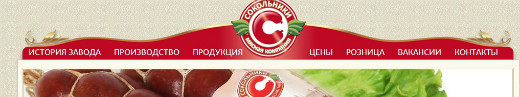
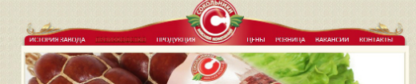

Меню
В данной контрольной работе представлен анализ юзабилити интерфейса сайта "Сокольники".
Главная страница – это лицо сайта, поэтому:
1. Главная страница должна объяснять, что это за сайт и для чего он был создан, обычно для выполнения этих функций используется слоган и текст приветствия.
2. На главной странице должен быть обзор содержимого сайта, например, выгодные предложения, последние статьи, а также обзор сервисов, например, авторизация, подписка на рассылку новостей.
3. Также на главной странице желательно присутствие периодически обновляемой информации: анонсы новостей, корпоративного блога.
4. Существует одна важная особенность главной страницы, которой очень часто пренебрегают: наличие ссылки или подсказки «Откуда мне начать». Как было сказано выше, пользователи часто выбирают наиболее очевидный или простой вариант дальнейшего перехода по сайту, поэтому при разработке сайта важно дать пользователю понять, откуда же ему следует начать, чтобы перейти к самому главному содержанию, чтобы что-то найти или просто побродить по сайту.
Главная страница – это лицо сайта, поэтому у пользователя всегда должна быть возможность С внутренних страниц сайта вернутся на главную страницу невозможно. Отсутствие ссылки на главную страницу может привести в замешательство неопытных пользователей. Опытные пользователи привыкли, что могут перейти на главную страницу при клике на логотип компании, к сожалению, здесь такой функционал отсутствует, что может привести к потере определенной посетителей сайта.
Навигация
1. Рекомендуется делать одинаковую навигацию на всех страницах сайта.
2. В шапке сайта и в «подвале» должна находиться контактная информация (хотя бы телефон).
3. На странице должно содержаться название раздел.
4. Желательно расположение указателя «Вы находитесь здесь» (выделение текущего раздела в меню).

Как показывают исследования, пользователи нередко ищут информацию на сайте, сразу прибегая к внутреннему поиску, не пользуясь системой навигации. Поиск по сайту - очень важный элемент юзабилити сайта. Однако на данном сайте компания принебрегла таким, немаловажным, элементом. Около 10% пользователей постоянно пользуются поиском.
Чтобы поиск был удобным, следует придерживаться следующих правил:
1. В идеале форма поиска должна размещаться на всех страницах сайта в верхней области (традиционно, верхний правый угол).
2. Оптимальная длина поля для ввода запроса – 27-30 символов
3. Поиск на сайте должен быть только внутренним (по сайту). Не следует предлагать пользователям поиск на внешних ресурсах, в интернете, так как для этого существуют глобальные поисковые системы.
4. Оформление страницы с результатами поиска должно быть максимально приближенно к странице выдачи глобальных поисковых систем: содержать поле для ввода запроса с введенным посетителем запросом, список результатов должен содержать заголовок (со ссылкой), краткое описание, можно также добавить URL или раздел, к которому относится результат.
5. Используйте функцию проверки орфографии, как в глобальных поисковых системах. При вводе поискового запроса с ошибкой следует выводить строку «Возможно, Вы имели в виду [правильное написание запроса]?»
При наведении курсора на ссылки основного меню текст ссылки сливается с основным фоном меню, что может быть не очень удобным, так как это затрудняет чтение текста ссылки.

Вывод:
Необходимо реализовать главную страницу, для сосредотачения основной информации, необходимой пользователю.
Необходимо добавить ссылку на главную страницу в основное меню.
Необходимо добавить строку поиска, для возможности быстрого перехода к нужной информации сайта.
Необходимо изменить цвет ссылки при наведении курсора, чтобы текст не сливался с фоном основного меню.